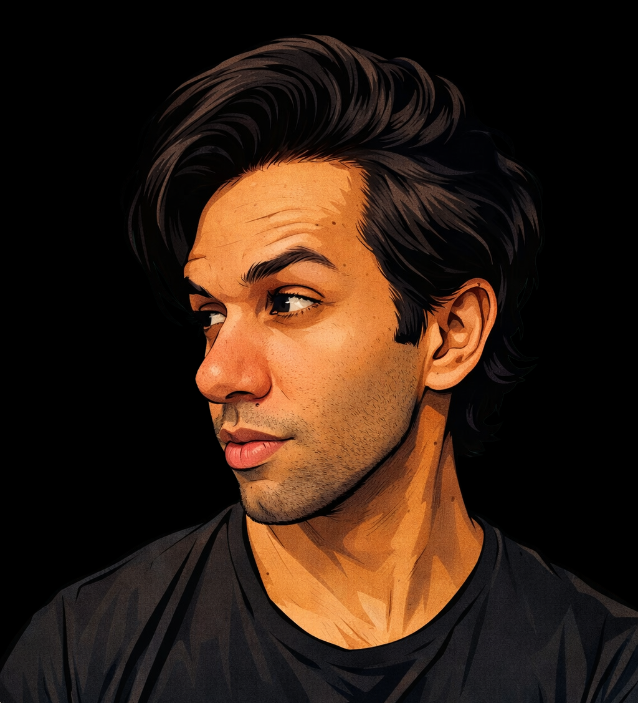

- Meu nome é Wandson Marques e sou desenvolvedor Front-end, formado em Análise e Desenvolvimento de Sistemas. Tenho foco na criação de interfaces modernas, responsivas e organizadas, buscando sempre unir design e experiência do usuário. Atualmente focado em estudos avançados em JavaScript & React, explorando: Manipulação dinâmica do DOM. Validações de formulários. Responsividade e boas práticas de UI/UX Componentização de interfaces.



Ferramentas:
- Utilizo o Visual Studio Code como meu editor principal, focando em produtividade, organização e boas práticas de desenvolvimento. Para controle de versão, trabalho com o Git, garantindo histórico eficiente e segurança no código. Além disso, utilizo o GitHub para hospedagem de projetos, colaboração e versionamento remoto.
.png)

Tecnologias:
- Domínio em HTML e CSS, criando estruturas semânticas e interfaces modernas, responsivas e bem organizadas. Utilizo JavaScript para adicionar interatividade e dinamismo às aplicações. Além disso, trabalho com React no desenvolvimento de interfaces escaláveis e componentizadas.